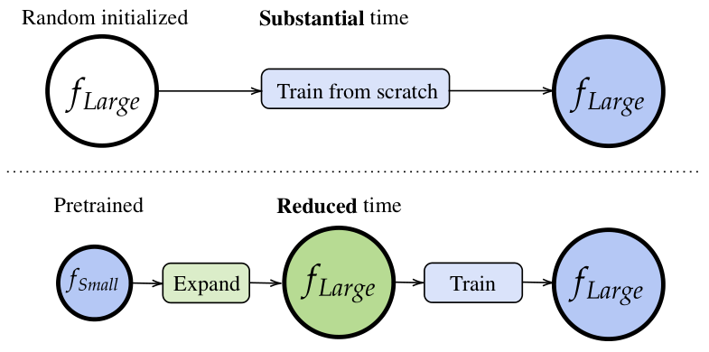

author: niplav, created: 2025-04-16, modified: 2025-04-16, language: english, status: in progress, importance: 7, confidence: certain
.
Suchst du das Unermeßliche hier, du hast dich geirret, Meine Größe ist die, größer zu machen dich selbst.
—Friedrich Schiller, “Kleinigkeiten”, 1805
The current trajectory of building superintelligent AI systems is omnicidally dangerous60%.
One way to make it slightly less dangerous is to train small AI models first, check them for their safety properties and/or train them so that they satisfy some safety properties, and then use the weights of those AI models to train larger AI models. In machine learning this process of training a bigger model initialized with a smaller model is called model expansion.

Diagram from Wang et al. 2023
To my knowledge, model expansion is not used in training frontier AI models.
There's four reasons why I think that this kind of training would be safer than pre-training from scratch with randomly initialized weights.
I don't think humanity yet has a good theory for the inductive biases of neural networks, initial attempts include the neural tangent kernel and singular learning theory and its focus on error-correction.
My current model is something like this:
Training neural networks performs Solomonoff
induction,
but limited to programs of some maximum length
$l$ and some maximum runtime $t$ (similar to
AIXI-tl,
where I'm not sure what the prior is. $l$ is upper-bounded by the
information-content of the weights of the network: The number of bits in
the program is pre-determined by how much you can fit into the floats of
the weights. $t$ is upper-bounded by the number of layers, as one can
only do as many operations on the data passed through the activations
as there are layers (or layer-equivalents).1
If we're worried about deceptive
alignment,
then we're arguendo most worried about selecting from programs with a
high $t$—many reasoning steps, even for short programs, probably
favor deception, tomfoolery, bamboozlement, shenanigans, trickery &c.
Model expansion here can help: We can start with a fairly wide but shallow network, and train that on the task, so that the resulting network is almost certainly non-scheming. But that network may have fairly low capabilities given that it can't do much sophisticated internal reasoning (though we may want to keep it that way?). So we can expand our model in its depth, and continue training it, but with the advantage of having some non-scheming structure to build upon.
In general, training in this way gives more control over when speed should be favored, and when simplicity should be favored.
If AI alignment/safety/welfare/non-totalitarianism is going to route through some kind of understanding of what kinds of mechanisms the AI models implement, then having models spend a larger amount of time in a smaller stage gives humanity more leeway of making statements about the structure of the models.
For example, sparse autoencoders on model activations are more expensive to train on bigger models than smaller models, and doing mechanistic interpretability on smaller models is probably easier65% than doing it on bigger models. So, under a scaling regime which involves model expansion, interpretability researchers could do run their interpretability tools on smaller models, and potentially carry over results to bigger models, e.g. by continuing to train a sparse autoencoder on an expanded model, or storing what specific circuits are expanded into.
How successful this could be would depend on the expansion technique and how much structure is carried over after training following an expansion; some expansion techniques distribute the existing weights evenly over an expanded layer.
When training smaller models to fulfill some behavioral safety criterion, it's more likely that the smaller model learns the concept we're trying to instill directly; be it environmental goals, low impact, mild optimization &c. During model expansion, we may be able to track how the original learned the concept and then evaluate how the learned concept changes during further training, being able to better control how the concept generalizes.
A common argument for the safety of scaling of neural networks is that they're scaled gradually, thus avoiding sudden capability jumps.
I don't fully buy this argument because there may be relevant capabilities that emerge under even small changes in log loss40%, but my bigger complaint is that frontier training runs are not very continuous-sized: The biggest training run can be easily 10× bigger than the 2nd biggest training run.
Using model expansion solves this; you don't need to start training a model from scratch, but can take a small model, expand it a bit, continue training it, do safety testing, expand it further &c, with a very clear path to further and further development. In this sense model expansion is the inverse of model distillation.
You can also have more control over what a model learns when, e.g. training chronologically, or on high-quality data first, and low-quality data later, or intersperse "pre"-training with reinforcement learning.
In an ambitious vision, training after model expansion is a tiny step towards a craft of intelligence: one in which different stages of a model are trained with different data, invariances are kept across scalings, interpretability tools transfer partially (or completely) because sometimes weights can be frozen, tracking model splintering…
Someone on twitter suggested that if we regard models as executing many short programs in superposition, then SGD may select for (1) error-correction, since programs do sometimes interfere with each other, and each program needs to correct its own data after interference (intuitively recapitulating the singular learning story), and (2) for modularity, since the end result of the individual programs needs to be combined together before producing an output. ↩